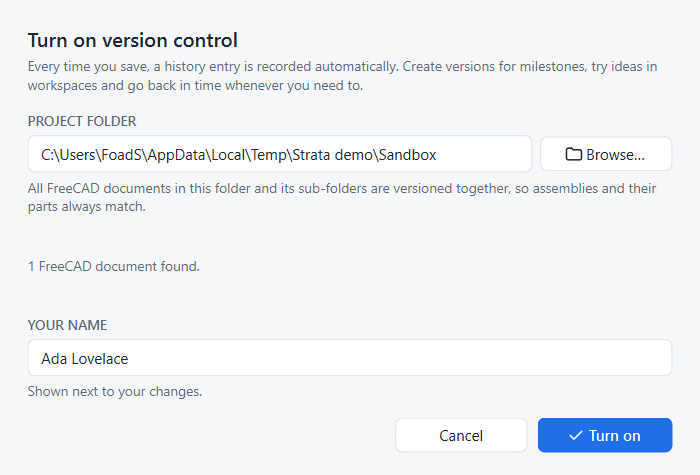
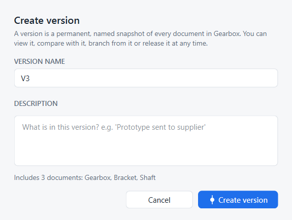

Quick start in five minutes
This page takes you from an ordinary FreeCAD folder to your first restored version. You need Strata installed and any FreeCAD part.
1. Put your documents in a project folder
A Strata project is simply a folder. Save the part you want to work on into a folder of its own, for example Documents\CAD\Bracket\Bracket.FCStd.
Assemblies and their parts belong in the same folder or its sub-folders; Strata versions them together.
2. Turn on version control
Open a document from that folder. The Versions and history panel shows that version control is off.
-
Click Turn on version control.
-
Check the project folder and your name. Your name appears next to your changes.
-
Click Turn on.

Strata records the current state as Start. From now on every save is recorded.
3. Work and save as usual
Change something, for example the length of a pad, and save with Ctrl+S. A new entry appears at the top of History, written in plain language:

Click an entry to see exactly what changed, who changed it and when.
4. Create a version
When you reach a milestone, for example a design you are about to send out, click Create version or press Ctrl+Shift+V.
Strata suggests the next name (V1, V2, …). Add a short description and click Create version.

A version is a permanent snapshot of every document in the project. It appears as a solid node in the Versions graph.
5. Go back in time
Keep working and save a few times. Then, in History or in the Versions graph:
-
hover an entry and click the eye to open that point as a read-only copy, or press Enter on it;
-
hover an entry and click the restore arrow to bring your project back to that point.
Restoring adds a new history entry, Restored to V1, so the state you left is still in history and you can return to it any time.
Next steps
-
Key concepts
Understand projects, versions, workspaces and releases. -
Explore an alternative
Try an idea in a workspace and merge it back. -
Work as a team
Share the project and sync with colleagues. -
Keyboard shortcuts
Work faster with the keyboard.